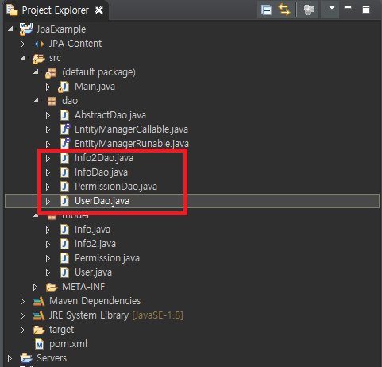

こんにちは。明月です。
前述で「JPA」で「EntityManager」を持ち来てデータを取得するところまで説明しました。
link - [Java スタディ - 45] JPAでトランザクションの使用方法とオブサーバーパターンで共通トランザクション関数を作り方
link - [Java スタディ - 42] JPAでpersistance.xml設定とentityクラス設定(@GeneratedValue設定)
DAOとは「Data Access Object」というr略語です。実は「JPA」では別に「DAO」を作らなくてもトランザクション設定でデータを取得するのは問題ないですが、プロジェクト設計することでソース管理のため、作ることですね。
それで「Dao」の場合は「Entity」と合わせて作りますが、「Dao」の共通関数とクラスを統合するように抽象クラスの「AbstractDao」を先に作りますね。
import javax.persistence.EntityManager;
// transactionで使えるラムダ式のインタフェース
public interface EntityManagerCallable<V> {
V run(EntityManager em);
}
import javax.persistence.EntityManager;
// transactionで使えるラムダ式のインタフェース
public interface EntityManagerRunable {
void run(EntityManager em);
}
import javax.persistence.EntityManager;
import javax.persistence.EntityManagerFactory;
import javax.persistence.EntityTransaction;
import javax.persistence.Persistence;
public class AbstractDao<T> {
// EntityManagerFactoryクラスを取得する。
private static EntityManagerFactory emf = Persistence.createEntityManagerFactory("JpaExample");
private Class<T> clazz;
protected AbstractDao(Class<T> clazz) {
this.clazz = clazz;
}
protected final void setClass(Class<T> clazz) {
this.clazz = clazz;
}
// クラスタイプを取得する関数
protected final Class<T> getClazz() {
return clazz;
}
// テーブルでキーの条件でデータを取得する。
public T findOne(Object id) {
return transaction((em) -> {
return em.find(clazz, id);
});
}
// EntityをデータベースにInsertする。
public void create(T entity) {
transaction((em) -> {
em.persist(entity);
});
}
// EntityをデータベースにUpdateする。
public T update(T entity) {
return transaction((em) -> {
T ret = em.merge(entity);
return ret;
});
}
// EntityをデータベースからDeleteする。
public void delete(T entity) {
transaction((em) -> {
em.remove(entity);
});
}
// トランザクション設定
protected <V> V transaction(EntityManagerCallable<V> callable) {
return transaction(callable, false);
}
// トランザクション設定
protected <V> V transaction(EntityManagerCallable<V> callable, boolean readonly) {
EntityManager em = emf.createEntityManager();
EntityTransaction transaction = em.getTransaction();
transaction.begin();
try {
V ret = callable.run(em);
if (readonly) {
transaction.rollback();
} else {
transaction.commit();
}
return ret;
} catch (Throwable e) {
if (transaction.isActive()) {
transaction.rollback();
}
throw new RuntimeException(e);
} finally {
em.clear();
em.close();
}
}
// トランザクション設定
protected void transaction(EntityManagerRunable runnable) {
transaction(runnable, false);
}
// トランザクション設定
protected void transaction(EntityManagerRunable runnable, boolean readonly) {
EntityManager em = emf.createEntityManager();
EntityTransaction transaction = em.getTransaction();
transaction.begin();
try {
runnable.run(em);
if (readonly) {
transaction.rollback();
} else {
transaction.commit();
}
} catch (Throwable e) {
if (transaction.isActive()) {
transaction.rollback();
}
throw new RuntimeException(e);
} finally {
em.clear();
em.close();
}
}
}
トランザクションに関しては前述しましたので省略します。
link - [Java スタディ - 45] JPAでトランザクションの使用方法とオブサーバーパターンで共通トランザクション関数を作り方
上の「findOne」、「create」、「update」、「delete」の場合は「JPQL」を作成しなくて、追加、更新、削除ができるので共通で作成しました。その検索の場合は条件と形が多いのでトランザクションを受け取って作成するようにしましょう。
共通クラスは上で各「Dao」クラスを作りましょう。

「Dao」の中では「Select」の「JPQL」を集まってプロジェクトの中でクエリを一つのパッケージで管理しましょう。
package dao;
import java.util.List;
import javax.persistence.Query;
import model.User;
public class UserDao extends AbstractDao<User> {
public UserDao() {
super(User.class);
}
@SuppressWarnings("unchecked")
public List<User> selectAll() {
return super.transaction((em) -> {
Query query = em.createQuery("SELECT u FROM User u");
return (List<User>) query.getResultList();
});
}
}
私の場合は上のソースみたいにDaoを管理します。特徴はトランザクションに関してラムダ式で使うから「Open」と「Close」に関して気にしなくてもいいし、正常なら「commit」、エラーなら「rollback」処理まで自動に処理してくれますね。
また、全てのクエリを「Dao」で管理するので、データベース関係クラスの業務クラスが分け、データベースが修正されてもソース全体ではなく、ここのDaoだけ修正することで作業ができます。
上をメイン関数で使いましょう。
import dao.UserDao;
import model.User;
public class Main {
public static void main(String... args) {
// Daoクラスを生成する。
UserDao dao = new UserDao();
// データを全て取得
for (User user : dao.selectAll()) {
System.out.println(user.getName());
}
}
}
添付 -  JpaExample.zip
JpaExample.zip
- [Java スタディ - 46] JPAでDAOを生成する方法2019/10/11 07:30:14
- [Java スタディ - 45] JPAでトランザクションの使用方法とオブサーバーパターンで共通トランザクション関数を作り方2019/10/10 07:29:43
- [Java スタディ - 44] JPAのQuery を作り方2019/10/09 07:34:08
- [Java スタディ - 43] JPAのEntityクラス設定(Cascade, fetch)2019/10/08 07:43:33
- [Java スタディ - 42] JPAでpersistance.xml設定とentityクラス設定(@GeneratedValue設定)2019/10/07 07:38:13
- [Java スタディ - 41] EclipseでJPAフレームワーク設定する方法2019/10/04 19:24:43
- [Java スタディ - 40] Web spring frameworkのJSPで使う言語 JSTL - XML2019/10/03 20:02:06
- [Java スタディ - 39] Web spring frameworkのJSPで使う言語 JSTL - 関数、データベース2019/10/02 21:00:22
- [Java スタディ - 38] Web spring frameworkのJSPで使う言語 JSTL - コアー、フォーマッティング2019/10/01 21:48:08
- [Java スタディ - 37] 「Web spring framework」の「Controller」で「ajax」の要請する時「json」タイプで返却する方法2019/09/30 22:19:34
- [Java スタディ - 36] Spring web frameworkでControllerを使用する方法2019/09/27 20:39:09
- [Java スタディ - 35] EclipseでSpring web frameworkを利用してウェブサービスプロジェクトを立ち上がる方法2019/09/26 21:31:25
- [Java スタディ - 34] Web serviceプログラムのServletを作成方法(Eclipse)2019/09/25 19:58:30
- [Java スタディ - 33] 「Eclipse」でトムキャット(tomcat)を設定する方法2019/09/24 19:35:54
- [Java スタディ - 32] Mavenをインストール、使用方法、そしてeclipseに連結する方法2019/09/24 00:19:25
- [Java スタディ - 46] JPAでDAOを生成する方法2019/10/11 07:30:14
- [Java スタディ - 45] JPAでトランザクションの使用方法とオブサーバーパターンで共通トランザクション関数を作り方2019/10/10 07:29:43
- [Java スタディ - 44] JPAのQuery を作り方2019/10/09 07:34:08
- [Java スタディ - 43] JPAのEntityクラス設定(Cascade, fetch)2019/10/08 07:43:33
- [Java スタディ - 42] JPAでpersistance.xml設定とentityクラス設定(@GeneratedValue設定)2019/10/07 07:38:13
- [Java スタディ - 41] EclipseでJPAフレームワーク設定する方法2019/10/04 19:24:43
- [Java スタディ - 40] Web spring frameworkのJSPで使う言語 JSTL - XML2019/10/03 20:02:06
- [Java スタディ - 39] Web spring frameworkのJSPで使う言語 JSTL - 関数、データベース2019/10/02 21:00:22
- [Java スタディ - 38] Web spring frameworkのJSPで使う言語 JSTL - コアー、フォーマッティング2019/10/01 21:48:08
- [Java スタディ - 37] 「Web spring framework」の「Controller」で「ajax」の要請する時「json」タイプで返却する方法2019/09/30 22:19:34
- [Java スタディ - 36] Spring web frameworkでControllerを使用する方法2019/09/27 20:39:09
- [Java スタディ - 35] EclipseでSpring web frameworkを利用してウェブサービスプロジェクトを立ち上がる方法2019/09/26 21:31:25
- [Java スタディ - 34] Web serviceプログラムのServletを作成方法(Eclipse)2019/09/25 19:58:30
- [Java スタディ - 33] 「Eclipse」でトムキャット(tomcat)を設定する方法2019/09/24 19:35:54
- [Java スタディ - 32] Mavenをインストール、使用方法、そしてeclipseに連結する方法2019/09/24 00:19:25